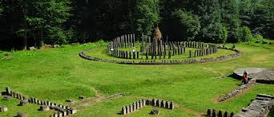
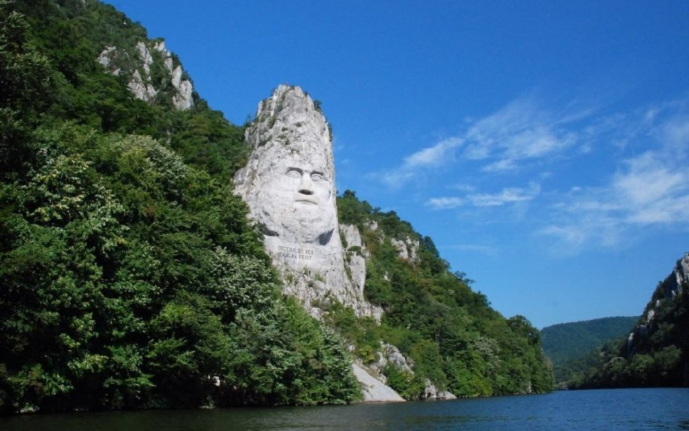
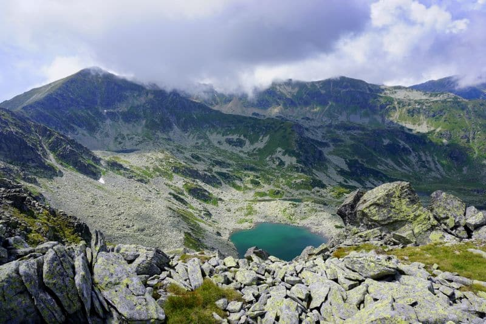

Every person who has heard about the wonders that Danube offers to humanity, knows the myth of the boilers. In fact, this is the place where the Danube has to cross the mountains. The force with which the river creates the path between the Carpathians rocks creates a unique landscape that during the time has become the tourism heritage in the area.Along the gulf, the water show is completed by the resorts with history and monuments that bear witness to an interesting past. In the village of Dubova, tourists can admire the statue of Decebal, the Dacian king, the monastery Mraconia and the yellow tulip that grows along the boiler, if you are there at the right time. On the Serbian side of the Danube, it is the Tabula Traiana, the inscription built by the Romans to witness the role of their emperor in these places. At the same time, the area of the boilers is full of caves known for their stories, like the cave of Veterans which belong to the Dacians, the Ponicova cave, known for its colonies of bats

2. National Park Gradistea Mucelului-Cioclovina
Grădiștea Muncelului - Cioclovina represents a protected area with the status of “natural park.” Its scope is to protect and conserve the natural habitat with respect to fauna, flora, forestry, hydrology, geology, speology, paleontology and pedology. The park focuses on sustainable conservation of natural resources, landscapes and local tradition.
Main attraction: Sarmizegetusa Regia
Sarmizegetusa Regia was the capital and the most important military, religious and political centre of the Dacians prior to the wars with the Roman Empire. Erected on top of a 1200 m high mountain, the fortress, comprising six citadels, was the core of a strategic defensive system in the Orăştie Mountains (in present-day Romania). Sarmizegetusa Regia should not be confused with Ulpia Traiana Sarmizegetusa, the Roman capital of Dacia built by Roman Emperor Trajan some 40 km away, which was not the Dacian capital. Sarmizegetusa Ulpia was discovered earlier, was known already in the early 1900s, and was initially mistaken for the Dacian capital, a confusion which led to incorrect conclusions being made regarding the military history and organization of the Dacians.
3. Parang Mountains
The Parâng Mountains are located in the south-western part of the Central-Meridional Carpathians. They are the tallest mountains from the local Parâng-Cindrel mountain group and the second largest mountains in the Romanian Carpathians after the Făgăraș Mountains. They are situated between the Șureanu Mountains (north), Latoriței Mountains (north-east), Căpățânii Mountains (east), Vâlcan Mountains (west) and the Petroșani Depression in the north-west. Located south and east of the city of Petroșani, the Parâng Mountains form the eastern barrier of the Jiu Valley (a plateau 100 kilometers long from east to west and 70-80 kilometers wide from north to south).
Main attraction: Big Parangu (Parangul Mare)
Parângu Mare is a mountain peak in Romania. At 2,519 metres above sea level, it is the highest peak of the Parâng Mountains, located in the Parâng Mountains group of the Southern Carpathians.[2] It is situated on the border of the Romanian counties of Gorj and Hunedoara. It is the most prominent peak in Romania (2,103 m), its parent mountain being Gerlachovský štít (2,655 m) in Slovakia..
 
<--------------------- Danube's Big Boilers
Parangul Mare Peak ------------------------------>